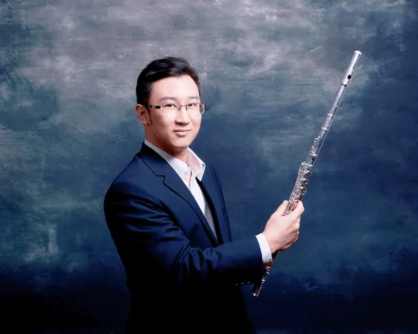
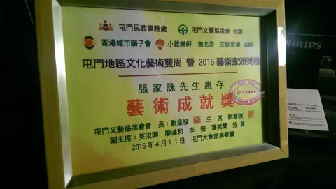

認識張老師
「學習音樂，首先從興趣開始。」
- 香港古樹茶文化學會副會長
- 樂聚忘憂樂團團長
- 國家高級評茶師
- 屯門文藝協進會導師
張家詠老師自少學習音樂。長笛先後跟隨李詩曼女士、陳仕斌先生及余永進先生進修，其後考獲皇家音樂學院「長笛演奏文憑」及「八級樂理」，並取得中央音樂學院「竹笛演奏文憑」。西洋管樂與中國竹笛兩條路並行。
畢業後，他投身音樂教育已二十年。先後擔任四十多間中小學的竹笛及指揮工作，亦曾隨樂團到訪北京、深圳、珠海、廣東、澳門等地演出。2007 年隨團到「北京演奏廳」演出，2011 年參與錄製 CCTV「魅力校園」。現時他是樂聚忘憂樂團團長。
課室以外，他與嶺南大學、城市大學、東華三院、保良局等百多間機構合辦音樂課程，至今教授學員數千人。2011 年獲中國民族管弦樂學會頒授「高級指導教師」資格，2015 年獲屯門文藝協進會頒發「藝術成就獎」。
2020 年起，張老師開設空靈鼓及茶禪音樂課程，把音樂應用於身心靈及情緒的調整，並曾研習音樂治療、靜觀及 NLP。他同時是香港古樹茶文化學會副會長及國家高級評茶師。
擅長的五種聲音
由西洋木管到中國竹管，再到近年的空靈鼓。
一路走來
學習、演出與教學，按年份排列。
- 自少
開始學習音樂，長笛師承李詩曼女士、陳仕斌先生及余永進先生。
- 資格
皇家音樂學院「長笛演奏文憑」及「八級樂理」；中央音樂學院「竹笛演奏文憑」。
- 2007
隨樂團到「北京演奏廳」演出。
- 2011
獲中國民族管弦樂學會「高級指導教師」資格；參與錄製 CCTV「魅力校園」等演出。
- 2015
獲屯門文藝協進會頒發「藝術成就獎」。

- 2020
開設空靈鼓及茶禪音樂課程，應用於身心靈及情緒的調整。
- 至今
教授學員數千人，與百多間機構合辦課程，並擔任樂聚忘憂樂團團長。

台上的張老師
長笛、竹笛與洞簫的獨奏、合奏與指揮。


合作過的學校與機構
百多間，包括：
- 嶺南大學
- 城市大學
- VTC 展亮技能發展中心
- 東華三院「健康校院計劃」
- 傷殘青年協會
- YMCA
- 保良局
- 明愛「隔離台」
- 聖公會
- 麥理浩夫人中心
教學理念
音樂從興趣開始
若音樂無法讓人本身感到快樂，學習音樂的路就不容易走得長久。在一次又一次練習的過程中，如果不知道自己未來能否從音樂中得到快樂，那只是徒勞的練習。學習音樂，首先從興趣開始。
定立目標
考試往往令學生煩惱、逃避，但在多年教學經驗裏，考試是一個良好的目標，令學生更有動力去進步。老師亦應令學生明白，考試只是學習的一部分，用來測試自己的技藝，不應以分數和名次去定義音樂的成就。
享受音樂，不拘一格
一首動聽的歌曲不一定很複雜。張老師的學生並不拘泥於古典音樂，粵曲、流行曲、歐洲古典音樂、美國爵士樂、印度的 Raga 都有令人陶醉之處。接觸不同的元素，才能豐富音樂世界，哪怕是簡單的一曲，也能更加動聽。
把「再練一次」變成清楚的方法
- 01
先聽問題在哪裏
聲音不穩，可能與氣流、嘴形、按鍵或孔位有關。分開觀察，才容易知道下一步該處理甚麼。
- 02
讓學生做得到
把難段縮成一個音、一個轉換或短短兩拍。任務有清楚範圍，回家練習便能接續課堂。
- 03
把技巧放回音樂
基本功改善後，接回作品的節奏與句子。音準、音色與手指協調，最終都要幫助表達。
兒童入門需要觀察樂器是否合手、專注時間和練習方式；成人學習則要把工作與生活時間一起考慮。已有基礎的學生，可以從反覆遇到的技巧問題或想演奏的作品出發。考級可以是學習目標之一，聆聽、合奏與閱讀新譜同樣重要。
從你現在的程度開始
把想學的樂器、已有經驗及可上課時間告訴張老師，一起討論合適的學習安排。